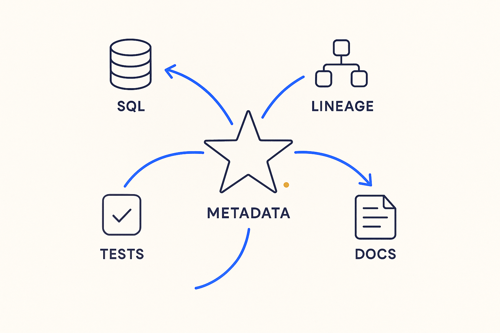

Metadata as the central star everything orbits — SQL, lineage, tests, and docs are all generated from it.

> Metadata as the central star everything orbits — SQL, lineage, tests, and docs are all generated from it.
Picture the platform as a solar system. At the center sits one body with all the mass: the metadata — models, mappings, rules, contracts. Everything else orbits it and shines with borrowed light: the SQL is generated from it, the tests are derived from it, the lineage is read out of it, the documentation is rendered from it. Nothing in orbit is authored independently; every artifact's position is determined by the star.
The image earns its place because it makes the failure mode visible. In most platforms there is no star — SQL, docs, lineage tooling, and test suites are separate bodies on independent trajectories, and keeping them aligned is manual gravity that teams eventually stop supplying. With a metadata star, alignment is not maintained; it is *inherited*. An artifact cannot drift out of sync with the metadata for the same reason a planet cannot drift out of its orbit unnoticed.
Metadata Star is the mental model; the metadata operating system is the same idea as an engineered system, and executable metadata is the property that gives the star its mass. If the metadata were merely descriptive, it would be decoration at the center — it is generation that creates the gravity.
Where it lives: the metadata OS — the orienting image for metadata-centric architecture.